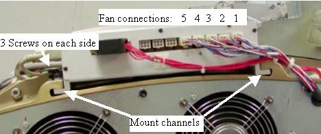

Operating Documentation
Direction 5193574-800, Rev# 22
LightSpeed 7.X Service Methods
Module Version 3.0, Version Date 6/12/15
Operating Documentation |
| Required Persons | Preliminary Reqs | Procedure | Finalization |
|---|---|---|---|
| 1 | NA | 30-60 (depending on detector warmup time) | 15 mins |
This procedure is the same for either the Heater Control Board or Fan Control Board on the Detector Air Plenum.
| Last Revised: | June 12, 2015 |
| Item | Qty | Effectivity | Part# | Manufacturer | |
|---|---|---|---|---|---|
| Standard FE toolkit | 1 | - | - | - | |
| Item | Qty | Effectivity | Part# | Manufacturer |
|---|---|---|---|---|
| Ty-wraps | As needed | - | - | - |
| Item | Qty | Effectivity | Part# | Manufacturer | |
|---|---|---|---|---|---|
| Heater controller assembly | 1 | - | 5150070 | - | |
| Fan controller assembly | 1 | - | 5150071 | - | |
| ||||
| CRUSH HAZARD. | ||||
| UNEXPECTED GANTRY ROTATION CAN CAUSE SERIOUS INJURY. | ||||
| Never service the gantry with the axial drive enabled. Use the gantry rotation lock to lock out gantry rotation. See safety menu of Service Document gui for appropriate procedures. |
Remove gantry right side cover.
Refer to Parts Replacement → Gantry → Enclosure → (Cover Removal Procedure).
Stop the rotor of X-ray tube in case of Liquid Bearing Tube before HVDC off. Refer to Liquid Bearing Tube Rotor stop procedure for details.
Disable Axial Drive and HVDC on the service switch panel.
Position the DAS/Detector in the 12 o’clock position.
Shut down power to the rotating assembly using the 120 VAC service switch on the service switch panel and engage the rotational lock.
Remove the gantry left side, top and front covers.
Access to controller side screws may be blocked by the gantry balance weights, remove the plenum using the Plenum Removal and Installation instructions and work on the plenum off the gantry.
Remove any cable connections still left on the controller being replaced. See Illustration 1 for location of controller assemblies.
Illustration 1: Fan Controller (CFC) and Heater Controller (DHC) 2005 style

Illustration 2: 2006 style plenum with cable covers

Remove screws from both sides (3 each side) of the board assembly and slide the assembly to the front to remove it from the plenum casting. See Illustration 3 for mount channel example shown with the Fan Control assembly.
Illustration 3: Mount Channels

Slide the new assembly into the Mount Channels.
Reinstall the 6 controller chassis screws.
| NOTE: | For the Fan control board of the older (2005 style) plenum: Make sure the fan control lines plugged into their respectively numbered locations. Physical fans are numbered 1-5 left to right as looking at the front of the gantry but control board connections are 1-5 right to left. |
Torque the 6 assembly screws to:
| 4 N-m | 2.9 lb-ft | 35 lb-in | 40.4 Kg-cm |
Reinstall the plenum on the detector using the Plenum removal and Installation instructions, including all cabling and cable safety covers.
For the newer (2006 style) plenum with the cable cover shields on the front of each controller covering the cables, reinstall the cable covers and torque screws to:
| 2.4 N-m | 1.8 lb-ft | 21.2 lb-in | 24.5 Kg-cm |
Turn power back onto gantry using the 120 VAC service switch, and retest for original failure mode.
Turn 120 VAC service switch off and disengage the gantry rotational lock.
Install the gantry front, top and left side covers.
Refer to Replacement → Gantry → Enclosure → (Cover Removal Procedures).
Enable 120 VAC HVDC and Axial Drive service switches from the service switch panel. Press the table drives enable button on the lower right corner of the service switch panel.
Install the gantry right side cover.
Allow the detector to warm up prior to customer use. This will take from 15 to 45 minutes depending on how long the Das/Detector power was off.
Perform a [Fastcal] to account for any minor thermal variations introduced by new controller.